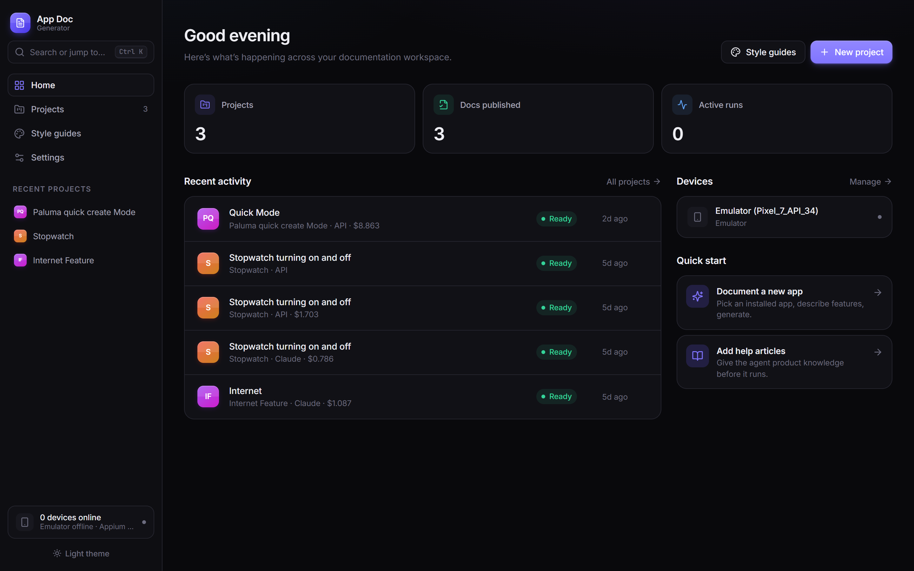
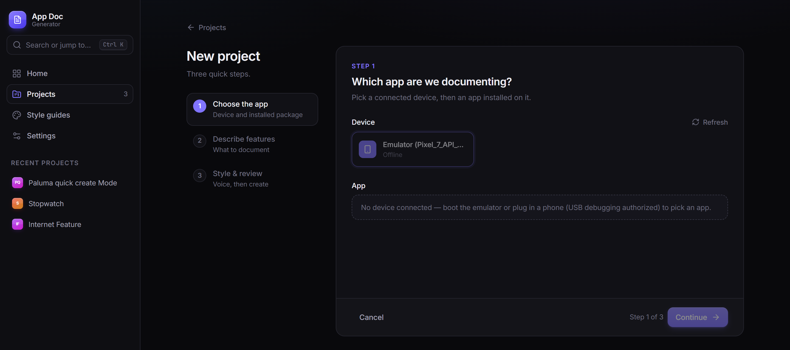
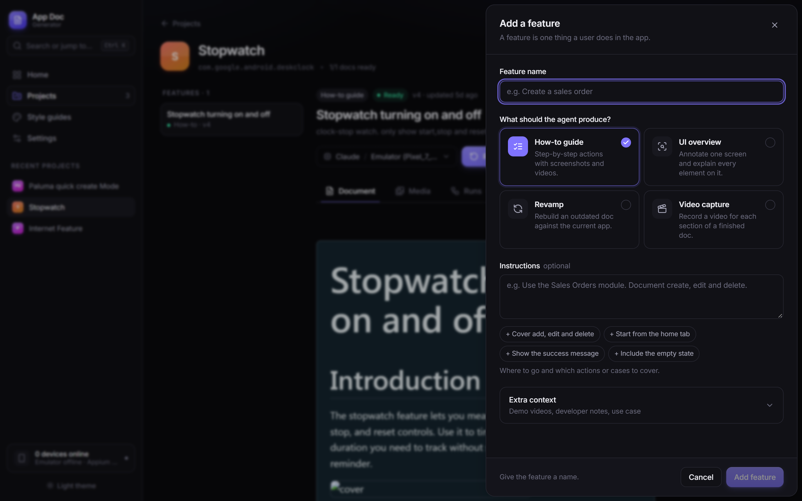
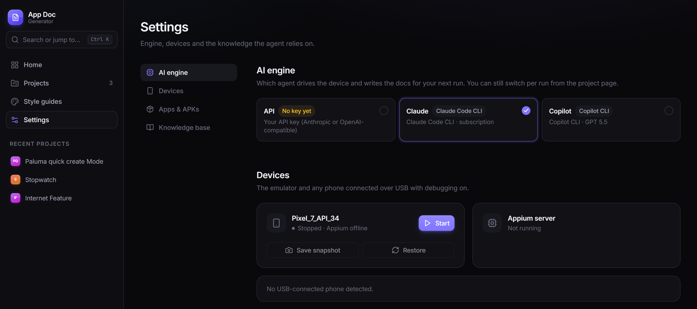
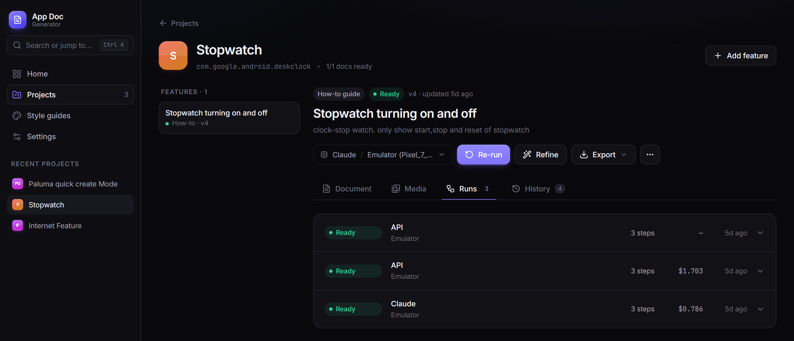
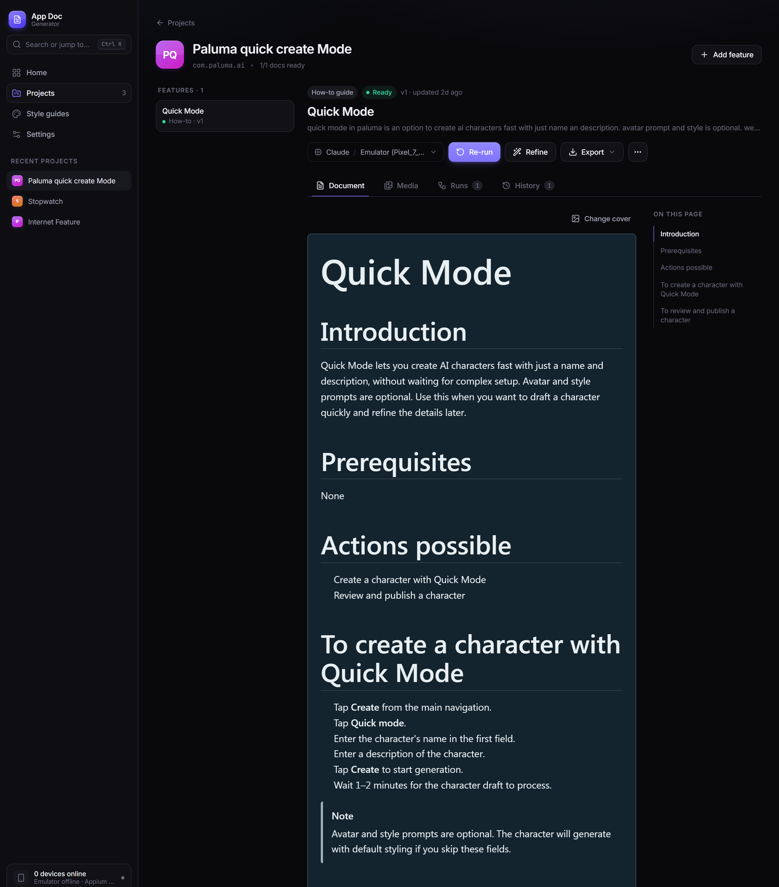

How this was built
I didn't write this code by hand. I built the whole tool with AI coding agents. My job was the thinking: what the tool should do, how each part should work, and what to change when the results weren't good enough. The agents turned those decisions into code.
- The idea: document an app by actually using it
- The approach, like reading the screen's structure instead of guessing from pictures
- The writing rules that make the docs read like a technical writer wrote them
- Testing real runs, spotting what was wrong, and deciding how to fix it
- Writing the code for each part I described
- Wiring up the libraries (phone control, video, database, web app)
- Making the changes I asked for after each test
The sections below go into technical detail. Read them as the decisions I made and why. The code that carries those decisions out was written by AI, following my direction.

Most "AI documentation" tools summarize a document you already wrote. This one starts from a running app instead. You give it a feature name and a sentence of instructions. It opens an Android emulator, finds the feature on its own, performs it for real, records a clean demo clip as it goes, and comes back with a formatted how-to article ready to publish.
I built it because I was tired of watching documentation rot. Every time an app shipped an update, some screenshot somewhere was suddenly wrong, and nobody noticed until a user complained. The project started as a question: can an agent drive a real app reliably enough that I'd trust what it writes? It turned into a full web app I actually use.
The problem with documenting an app by hand
Writing a how-to article for a mobile feature is three jobs stacked on top of each other. First you perform the flow yourself, carefully, so you don't miss a step. Then you write it up in plain, consistent language. That's more tedious than it sounds, because "tap the field and enter your company name" needs to become "fill in the required details", or the doc is wrong the moment someone's account has different custom fields. Then, if you want a demo video (and you should, because screenshots alone are a worse experience), you do the whole thing again on camera. Fat-finger one tap near the end and you re-record the clip from scratch.
None of those jobs is hard on its own. Doing all three, correctly, for every feature, every release, is what doesn't scale. That's why documentation is usually the first thing to fall behind.
What it actually does
From the outside, using it looks like this:


Architecture at a glance
There are two halves. A Node server owns everything the user sees: projects, prompts, the knowledge base, the video pipeline. A small Python server owns the phone. Between them sits one of three interchangeable agent "engines", and the only thing any engine talks to on the phone side is a fixed set of MCP tools.
Scroll sideways to see the full diagram →
A run goes top to bottom. The orchestrator builds one prompt (feature, instructions, style guide, knowledge-base snippets, writing rules) and hands it to whichever engine the user picked. The engine loops: read the screen, call one tool, read the result, repeat until it calls done(). Screenshots and raw clips land in a per-run folder. After the run, the video pipeline turns the clips into finished videos, and the Markdown gets rendered with its media markers resolved and saved as a new doc version, so older versions can always be restored.
The core idea: read the tree, not the pixels
A lot of "AI controls an app" demos show a vision model a screenshot and ask it to guess pixel coordinates to tap. It looks great in a GIF and is unreliable in practice. Screen density varies across devices, a button moves eight pixels between versions, and estimating the exact center of a small icon from a picture is something vision models are still shaky at.
So this doesn't do that. Android exposes an accessibility tree for every screen, the same data screen readers use, and Appium can hand it over as XML. The tool parses it, drops everything that isn't visible, tappable or carrying meaningful text, and compacts what's left into a short numbered list:
[ 12] Button "Save" id=action_save bounds=(900,80,1060,160) clickable
[ 27] EditText "Company" id=company_input bounds=(80,320,1000,400) input
[ 31] ImageView "" id=fab_add bounds=(940,1780,1060,1900) clickableA trimmed example of the compact tree the agent actually reasons over.
The model just says "tap 12". No coordinate math, no guessed pixels. Every gesture tool (tap, type, swipe) returns the refreshed tree in its own response, so the agent never spends a turn re-reading the screen after acting. IDs only belong to the tree they came from, so a stale ID can't quietly tap the wrong thing three screens later.
It isn't pixel-free everywhere. Some Jetpack Compose icons render with no label, description or resource ID at all, so there's a coordinate fallback for those. The prompt is explicit that it's a last resort, and in a normal app the tree covers almost everything.
One tool surface, three brains
The phone is controlled through a small local server that exposes tap, type_text, swipe, press_back, screenshot, begin_action/end_action for recording, and done as tools over the Model Context Protocol, on top of Appium. That server doesn't know or care which model is calling it.
There are three ways to drive it. The first is a TypeScript agent loop built for this project that talks straight to an Anthropic or OpenAI-compatible API with native tool calling, so anyone with an API key can use it. The other two spawn the Claude Code CLI or the GitHub Copilot CLI, which already speak MCP and bill through whatever subscription the person already has.


That was a deliberate call. I didn't want the project to live or die by one vendor's agent harness or pricing. The prompt and the tools are identical whichever engine is driving; only the outer loop changes. It also turned out to be a useful debugging trick. Running the same instructions through all three shows you exactly where the models make different judgment calls, which you'd never see building against just one.
The tapping turned out to be the easy part
Getting the agent to find and perform a feature took real iteration, but it came together faster than I expected. Getting it to write documentation that reads like a technical writer published it, rather than a transcript of button-mashing, took a lot longer. Most of that work lives in the prompt, not the code.
The clearest example is what I ended up calling the universal-steps problem. To record a good demo, the agent has to fill in real forms with realistic data: every visible field, a real-sounding name, a plausible address. Left alone, it then writes that up literally. Tap Company, type the company name, tap the back arrow, enter First Name, enter Last Name, tap Lead Source, choose an option. It's a faithful record of what happened, and it's useless as documentation, because the next person's account has different custom fields and the steps are wrong on day one.
What it wants to write
Tap the + button.
Tap Add Lead.
Tap the Company field.
Type the company name.
Tap the back arrow to confirm.
Enter the First Name.
Enter the Last Name.
Enter the remaining fields.
Tap Lead Source.
Choose an option.
Tap Save.
What ships
Tap the + button.
Tap Add Lead.
Fill in the required details.
Tap Save.
The fix is a rule, not a smarter model. Filling a form is one step in the text, full stop. The field-by-field detail belongs in the video, where it helps, not in prose that has to stay accurate across accounts and releases. A handful of rules like that did more for the output than any amount of asking for "concise": steps capped at twelve words, one action per step, exact button labels in bold, and never narrating "you will see...".

There's a second layer. A lot of mobile features are configured on the web and only used on the phone. A small keyword-search index over existing help articles is queried before a run starts, and the agent can search it mid-run too. That lets it tell "this is new on mobile, describe exactly what I see" apart from "this is set up on the web, so say so and link to it". The prompt is blunt that the live screen always wins if the two disagree.
The video pipeline was the hardest engineering problem
The idea is simple: the authoring run is the recording. The agent wraps each action in begin_action() and end_action(), which start and stop a screen recording on the emulator, and whatever it does in between becomes raw footage. There's no separate "now do it again for the camera" pass.
The catch is that raw footage is a mess. It includes the model's thinking pauses between tool calls and any wrong taps it recovered from, and it runs far longer than the action takes. The obvious fix is to timestamp each tap relative to when recording started and cut the clip to those times. I tried that first. It doesn't work, because the recorder's clock and the actual video timeline drift apart (encoder warm-up, variable frame rate). Trust the clock and you cut into the previous action, or freeze on a half-loaded spinner.
What works is anchoring by content instead of by clock. After each gesture settles, the tool server saves a screenshot of the settled screen plus a small fingerprint of its UI tree. When the raw clip is processed later, image matching finds the frame in the video where that settled screen actually appears, and the keep-window is built around that frame rather than a guessed time. Clock drift can't affect it, because it never looks at the clock; it looks at what's on screen. When nothing matches cleanly (an old run with no settled shots, or genuinely ambiguous frames), it falls back to the time-based cut and flags the clip for review instead of quietly shipping a bad one.
A few more layers sit on top. discard_step lets the agent mark its own mistakes, a wrong tap and the Back press used to undo it, so they're removed from the video entirely. An optional vision-model check looks at each clip's last frame and asks whether the screen has actually finished loading, and extends the clip if it hasn't. Every clip also carries a status of auto_ok, needs_review or edited, because I don't trust any single heuristic, mine included, to be right every time. For the cases it gets wrong, the web app has a non-destructive timeline editor: scrub, split, drag a boundary, save, and it re-renders from your edits without ever touching the raw clip.
Small details that mattered more than I expected
Some problems only showed up once I was watching real footage, and each needed its own fix.
- Duplicate touch ripples. Tapping a text field and then typing into it are two tool calls, but visually one tap. Without deduping, the video showed two overlapping ripples on the same spot. The fix is a simple window: a second touch within 40 pixels and 1.5 seconds of the last one doesn't get its own ripple.
- The status bar leaked the real time. Android's demo mode can freeze the clock at 12:30 and hide notification icons, which matters more than it sounds: a screenshot with today's time and a stray notification badge looks sloppy and dates itself. The trickier part was that Android quietly drops that state during a long run, so it gets re-applied right before every recording, not just once at startup.
- Crash recovery. If the server restarts mid-run, it finds any run still marked "in progress" and resolves it on boot, instead of leaving the UI watching a run that will never finish.
- Cost estimates close to the real bill. The live cost counter prices cached prompt reads and writes separately from normal tokens. A cache read costs roughly a tenth of a fresh one, so ignoring that would throw every estimate off noticeably on a long run.
The rest of the app
Under the agent it's a real web app, not a script with a UI bolted on. Next.js runs behind a custom server so WebSocket and HTTP traffic share one process. Projects and features are SQLite rows, and every generated document is saved as a new version you can roll back to. The live run view streams every thought, tool call and screenshot as it happens, and asks "still going?" if a run runs long, so nothing burns through a budget unnoticed. There's a Fabric.js screenshot annotator for redacting or highlighting before publishing, per-project style guides that set tone and feed reference examples into the same prompt every engine gets, and export to a single self-contained HTML file or a Markdown-plus-media zip, depending on where the doc needs to live.
What I'd change
A few things are still rough, and I'd rather say so than pretend otherwise.
The clock-drift problem is really a symptom of the recorder I chose
Content-anchored trimming works around the emulator's built-in recorder drifting from real time. There's an experimental host-side recorder (scrcpy) that gives noticeably smoother footage, but it only emits frames when the screen changes, which breaks the anchoring assumptions in a different way. It's still in there, opt-in and off by default, and honestly unsolved.
The three engines don't explore identically
Same prompt, same tools, but different models make different calls about how thoroughly to explore before deciding a feature is covered. I haven't closed that gap, and I'm not sure it can be closed completely without giving up the point of supporting more than one engine.
Error handling leans on "log it and keep going" more than I'd like
It's built to run unattended for twenty minutes or more, so a lot of non-critical steps (a failed screenshot, a demo-mode command that didn't stick) are best-effort rather than fatal. That's the right call for keeping a long run alive, but it also means some failures are quieter than I'd want in something other people depend on.
What building this taught me
Going in, I assumed the hard part would be the agent: getting a model to navigate a UI it had never seen. That came together faster than I expected, mostly because reading the accessibility tree instead of guessing at pixels removes most of the fragility up front. What actually took the time was everything after "the agent found the right screen": writing prose that stays true a release later, and turning a recording full of hesitations and mistakes into something that looks intentional. Neither of those is a model-capability problem. They're editorial and engineering problems that happen to have an LLM in the middle, and treating them that way, with explicit rules, fallbacks and a human review step instead of blind trust in the automation, is what made the output usable. It's also how I worked with the coding agents that built it: they wrote the code, and I judged every result against what the tool actually had to do.